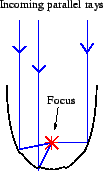
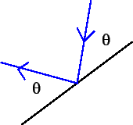

Like many scientists, mathematicians and engineers past and present, Archimedes aided the military when his home city was besieged by the Romans. Legend has it that he used polished shields arrayed in a giant parabola to focus sunlight upon the invading Romans ships, and that these ships burst into flames. Whether or not the legend is true, one of the many useful properties of the parabola is that it will focus parallel rays upon a single point (see figure below left).
Of course, Archimedes parabolas were not infinitely large, and the amount of light (energy) focused is proportional to the finite width of the parabola. Thus, one can adjust the performance of the optical weapon by adjusting the position and shape of the parabola.

